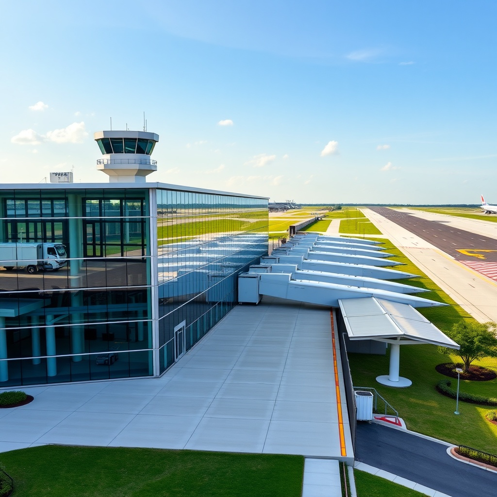
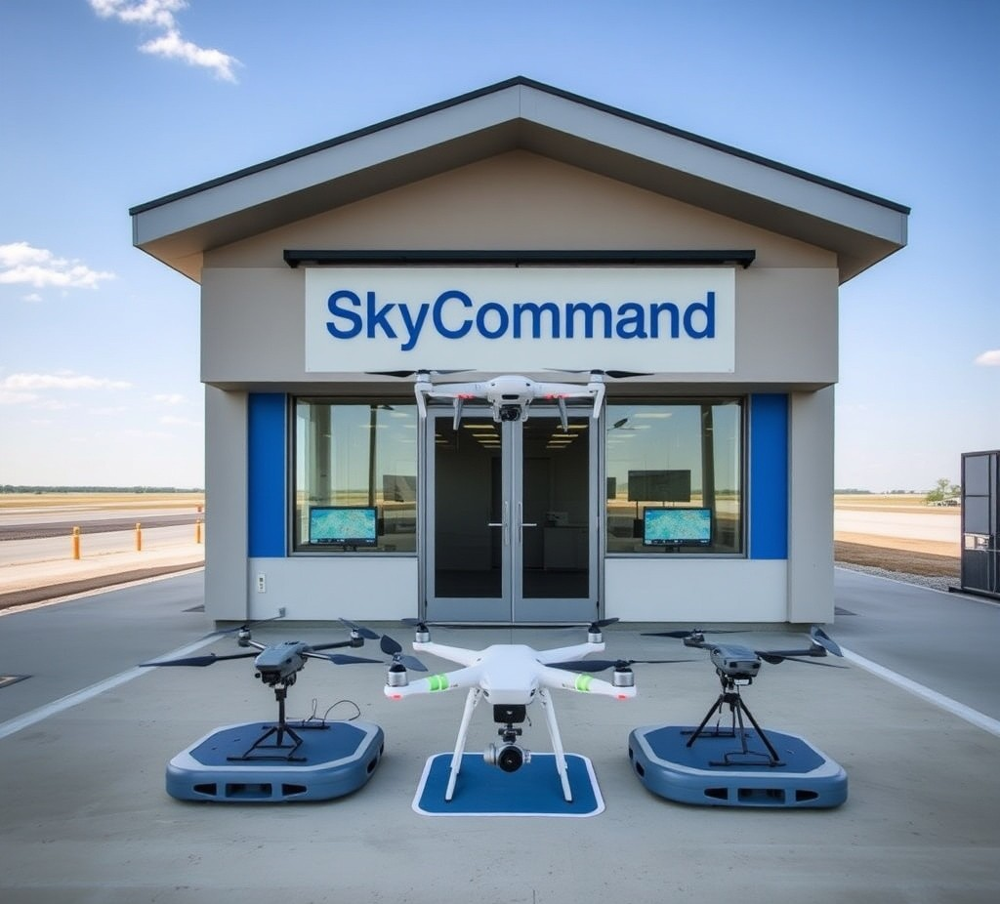
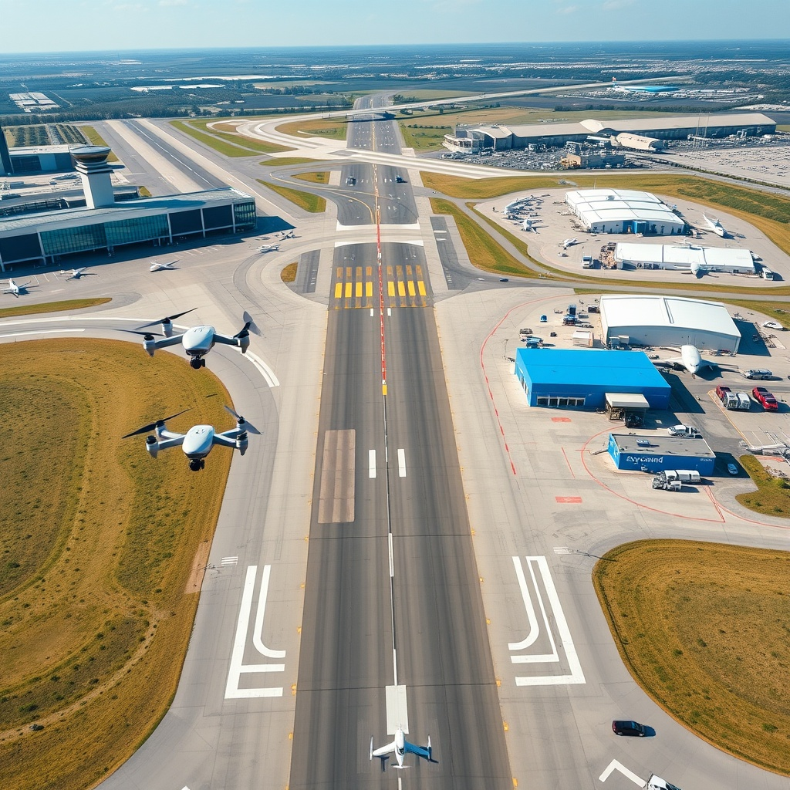
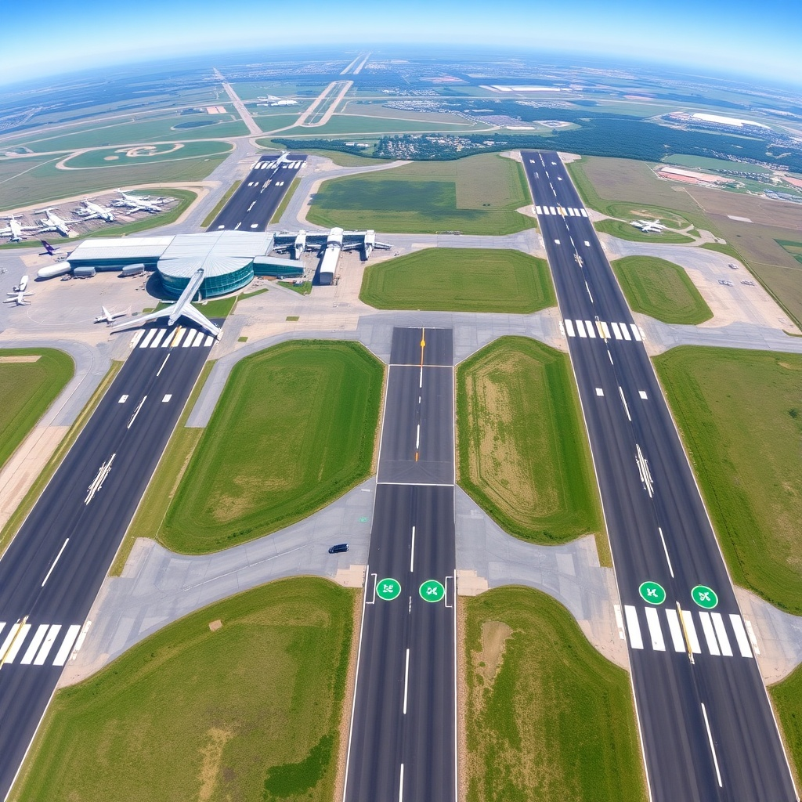
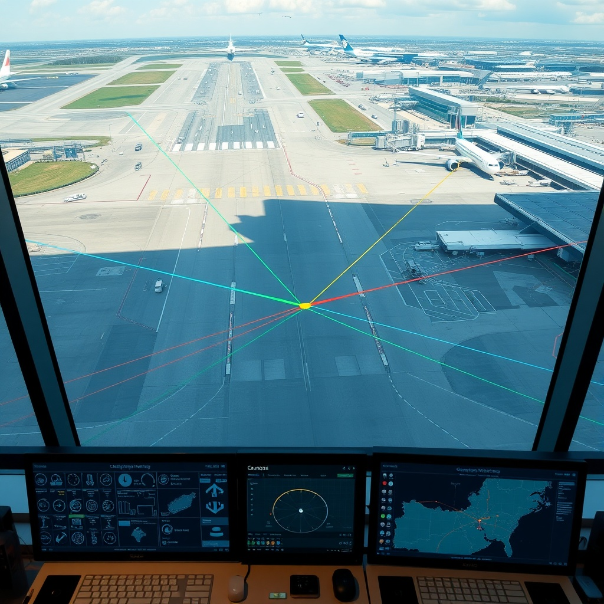
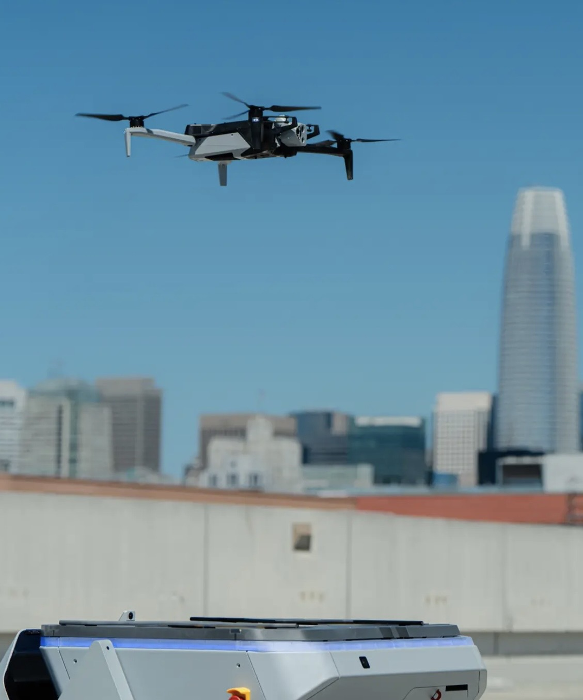

Lafayette Regional Airport — the first NVIDIA Smart City airport in Louisiana. Autonomous drones for first responders, pipeline operators, and hurricane recovery.
Concept renders of the KLFT drone hub — terminal, SkyCommand center, active operations, and overhead view.





KLFT is purpose-built for the missions that matter most — getting eyes in the sky when minutes count.
Louisiana faces hurricanes, industrial corridor risks, and vast territory that ground-based response cannot cover fast enough. KLFT deploys autonomous drone operations from Lafayette Regional Airport — serving first responders, pipeline operators, search and rescue teams, and medical delivery networks.
The hub operates Skydio X10 drones from permanent docks, managed by FlytBase AI-R fleet software, with NVIDIA Jetson edge compute at every dock for real-time AI inference. No pilot required. No waiver needed once Part 108 publishes.
Every component is American-made. Every system is NVIDIA-accelerated. Every mission serves Louisiana first.

The regulatory wall that has blocked commercial drone operations in the US is about to come down.
The FAA Part 108 rule for Beyond Visual Line of Sight (BVLOS) operations is approaching final publication in spring 2026. The comment period closed October 2025 with over 3,000 responses. This replaces the current waiver-by-waiver system that has throttled the industry for years.
Two tiers: Operating Permits for lower-risk missions (pipeline inspection, agriculture) and Operating Certificates for complex operations (urban DFR, medical delivery, multi-vehicle). Covers drones up to 1,320 lbs.
For KLFT, this is the unlock. Every mission type we are building for — hurricane response, pipeline inspection, DFR, SAR — becomes legally operational without individual waivers once Part 108 publishes.
3,000 X10D drones — the largest single-vendor military drone purchase in US history. Blue UAS approved. DJI locked out by the Countering CCP Drones Act. Skydio is the American standard.
ISAC (Integrated Sensing and Communications) turns cell towers into radar for drone tracking. C2 data links, threat detection, and UTM integration from existing tower infrastructure.
NVIDIA groups airports under "Ports" in their Smart Cities program. KLFT is positioned as a reference deployment site — Jetson + Metropolis + Omniverse at one airport.
Every component in the KLFT stack is US-manufactured, Blue UAS compliant, and built on NVIDIA silicon.
Autonomous flight, 6 cameras, thermal imaging, GPS-denied navigation. The Dock is 2x2 ft, ~70 lbs — bolts to a concrete pad. No container, no hangar.
16GB, dock-side deployment. Runs real-time AI inference on thermal, visual, and LiDAR data. Object detection, anomaly flagging, and autonomous decision-making at the edge.
Cloud-native fleet orchestration. Multi-vehicle scheduling, mission planning, live telemetry, autonomous dock management. Integrates with Skydio SDK and NVIDIA Metropolis.
Xeon 4416+, 128GB DDR5. Two servers for Phase 1 mission services — telemetry ingestion, flight planning, safety supervisor, ADS-B integration. No GPU needed until Phase 3.
KLFT sits at the intersection of three NVIDIA ecosystems that no other small airport in the country has deployed together.
Skydio X10 runs on Jetson Orin. Every dock gets a Jetson Orin NX for local inference. Real-time object detection, thermal analysis, and autonomous decision-making without cloud round-trips.
NVIDIA Metropolis Video Storage Service (VSS) Blueprint for airport camera AI. Open source. Runway incursion detection, perimeter security, wildlife hazard identification — all running on existing camera infrastructure.
Smart City AI Blueprint for a live 3D digital twin of the airfield. Drone positions, weather overlays, flight corridors, dock status — all visualized in real time. Mission planning in simulation before live deployment.
NVIDIA needs reference deployments to prove their platform works at real sites. Major airports (Bengaluru, Toronto Pearson, Heathrow) run Metropolis. No small US airport runs all three. KLFT can be the first — and it is less than a mile from Trappeys, where the GPU compute lives.
Four phases over 36 months. Each phase has clear exit criteria before the next begins.
Single-operator, single Skydio vehicle, VLOS/EVLOS operations. Mission services on two Dell servers. 10 operational missions as exit criteria. Prove the platform works.
Multiple drones, Safety Supervisor on dedicated hardware, ADS-B integration, airspace deconfliction. FlytBase fleet management online. Concurrent missions.
NVIDIA L40S inference node online. 3-5 docks deployed. Full BVLOS readiness with DAA sensors. Metropolis video AI on airport cameras. Digital twin in Omniverse.
50+ concurrent operations. 10+ dock sites across Acadiana. AI-RAN integration for beyond-line-of-sight C2 links. SkyCommand platform licensed to other airports.
Every mission type KLFT supports is driven by real operational need in the Gulf Coast region.
Autonomous survey flights over impact zones within hours of landfall. Thermal + visual AI identifies structural damage, downed power lines, flooding extent, and survivors. GTC 2026 T-Mobile demo showed 5x faster assessment.
Thermal imaging detects methane leaks, corrosion, and equipment anomalies along the I-10 industrial corridor. Scheduled autonomous flights replace manned helicopter inspection at a fraction of the cost.
Thermal signatures in disaster zones, flood waters, and dense vegetation. AI-powered person detection works day or night. Covers more ground in 30 minutes than a search team covers in 8 hours.
Less than 2 minutes on scene vs 8+ for a patrol car. Live video to dispatch. 30+ US police and fire departments already using DFR. KLFT brings it to Lafayette and Acadiana.
AED, blood products, antivenom, and medication delivery to rural Acadiana locations where ground transport takes 30+ minutes. Dock-to-destination autonomous flights.
ISAC sensing from cell towers provides radar tracking, C2 data links, and threat detection for BVLOS operations. Extends operational range far beyond visual line of sight using existing tower infrastructure.
The airport corridor has some of the newest infrastructure in Lafayette — buried utilities, LED lighting, and municipal power.
KLFT is not a standalone project. It plugs into the full ADC infrastructure network across Louisiana.
Engineering package complete. FAA Part 108 approaching. Hardware stack locked.
KLFT is the first NVIDIA Smart City airport in Louisiana.
scott@adc3k.com | adc3k.com | (337) 780-1535